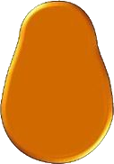

<!DOCTYPE html>
<html lang="en">

  <head>
    <meta charset="UTF-8">
    <meta http-equiv="X-UA-Compatible" content="IE=edge">
    <meta name="viewport" content="width=device-width, initial-scale=1.0">
    <title>Document</title>
    <style>
      html, body {
        height: 100%;
        width: 100%;
        margin: 0;
      }

      #parts {
        width: 25%;
        height: 100%;
        float: left;
      }

      #main {
        width: 75%;
        height: 100%;
        float: left;
      }

      .part {
        margin: 16px;
        position: absolute;
        z-index: 0;
      }

      #main {
        background-image: url("images/background.jpg");
        background-size: cover;
      }

      /*.potato {
        z-index: 0 !important;
      }*/
    </style>
  </head>

  <body>
    <div id="parts">
      <!--img class="part" src="images/1.png">
      
      
      
      
      
      
      
      
      
    </div>
    <div id="main"></div>
    <audio src="media/bensound-happyrock.mp3" xautoplay loop xcontrols></audio>
    <script src="https://code.jquery.com/jquery-3.6.0.min.js"
      integrity="sha256-/xUj+3OJU5yExlq6GSYGSHk7tPXikynS7ogEvDej/m4=" crossorigin="anonymous"></script>
      <script src="https://code.jquery.com/ui/1.13.0/jquery-ui.js"></script>
    <script src="potato.js"></script>
  </body>

</html>